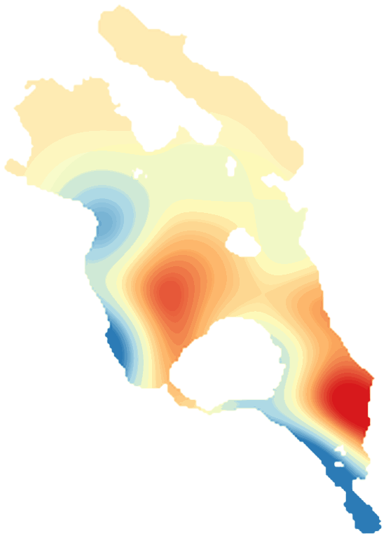

LakeScope › FL
Lake Kissimmee today
Updated 2026-11-21 - Atlas Labs
Algae likely, 68°F water, level falling, 1 ft above normal, calm this morning.
Water level
52.55 ft
U.S. Army Corps of Engineers - 2026-11-21
7-day trend: falling (-0.19 ft). Compared with normal for this date: +1.4 ft (same weeks, 2023-2025).
Water clarity and algae
Algae likely Last clear view: over a week ago. 1 cloudy pass since.
Surface temperature
68°F
seen from space on 2026-11-16

Weather, next 3 days
| Day | Sky | High / low | Wind | Rain |
|---|---|---|---|---|
| Saturday | Chance Rain Showers | 80 / 67°F | 10 mph SSW | 41% |
| Sunday | Mostly Sunny | 79 / 63°F | 10 mph WSW | 12% |
| Monday | Partly Sunny | 76 / 64°F | 5 mph N | 1% |
Sunrise 06:51 - sunset 17:30 - Waxing gibbous. National Weather Service.
Get the LakeScope app: alerts and the 3-D view of Lake Kissimmee